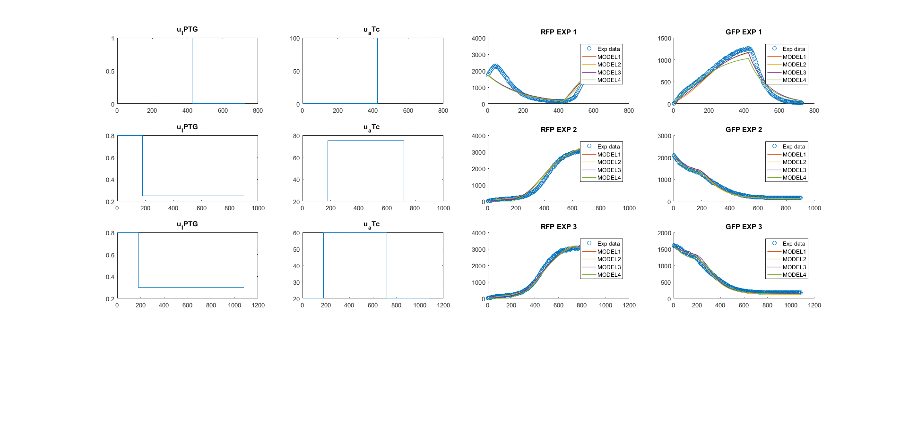

Contents
Train a family of models
clear variables; clc; close all; noise_pseudo_data=0.05;
Load default setting
SBL_config_defaults;
Configure experimental data
sbl_config.data_dir_name = pwd; sbl_config.data_file_name = 'toggleSwitch_1.csv'; sbl_config.exp_idx=1:3; sbl_config.dict_generator = str2func('build_toggle_switch_dict'); sbl_config.estimate_structure_only=0;
Generate multiple models by enforcing different sparsity coeficients.
sbl_config.sparsity_vec = [0.05 0.1 0.15 0.2 ];
Generate and fit a family of models
We generate a family of models with SBL and fit with AMIGO+scatter search
MODELS=SBL_gen_model_family(sbl_config);
25-Sep-2019 15:52:28 | loop iter: 1, generating SBL data 25-Sep-2019 15:52:28 | file: toggleSwitch_1.csv was successfully imported | 3 experiments was selected 25-Sep-2019 15:52:28 | loop iter: 1, running SBL runnging sparsity case: 1/4 runnging SBL on state: 1/2 SBL iter: 1/10 took 2.32575 sec SBL iter: 2/10 took 1.45077 sec SBL iter: 3/10 took 0.999079 sec SBL iter: 4/10 took 1.41834 sec SBL iter: 5/10 took 1.52586 sec SBL iter: 6/10 took 0.751677 sec SBL iter: 7/10 took 1.78155 sec SBL iter: 8/10 took 1.53489 sec SBL iter: 9/10 took 0.685124 sec SBL iter: 10/10 took 0.699559 sec runnging SBL on state: 2/2 SBL iter: 1/10 took 0.741988 sec SBL iter: 2/10 took 0.715639 sec SBL iter: 3/10 took 0.807706 sec SBL iter: 4/10 took 0.727714 sec SBL iter: 5/10 took 0.863354 sec SBL iter: 6/10 took 0.758296 sec SBL iter: 7/10 took 0.829248 sec SBL iter: 8/10 took 0.791958 sec SBL iter: 9/10 took 0.742573 sec SBL iter: 10/10 took 0.743287 sec Elapsed time is 0.791566 seconds. state: x_1 zero_th: 0.00386004 dict_num: 5 (0.55371%) state: x_2 zero_th: 0.00715729 dict_num: 5 (0.55371%) ODE simulation OK ...
Plot the optimization results and trajectories from the generated model family
The convergence curves are given scatter search. Time courses for each modeled observable are also ploted along with the experimental data.
SBL_plotFamilyFit(MODELS); set(gcf, 'Units', 'Normalized', 'OuterPosition', [0, 0.04, 1, 0.96]);